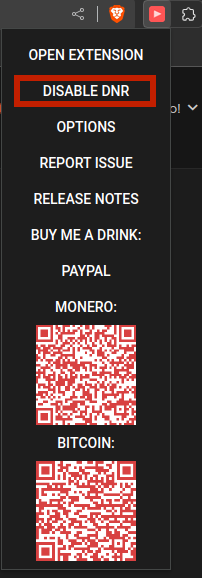
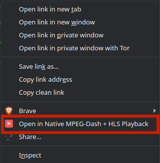

Please read this document before use!
Native Adaptive Streaming Extension has been updated to version 5.0.5
Bugfixes
- Fixed extension reacting to keyboard shortcuts while typing in settings
- Fixed chopping off settings window on smaller resolutions
- Fixed settings window opening on bufferStalledError
Improvements
- Renamed About to Links, reordered links
Features
- Added option to enable native window controls
Native Adaptive Streaming Extension has been updated to version 5.0.4
Bugfixes
Features
- Added about section
- Added privacy policy links
- Added settings keyboard shortcut using 's' key
Native Adaptive Streaming Extension has been updated to version 5.0.2
Bugfixes
- Fixed issue with the local storage API not saving data properly. Those who have saved streams need to save them again.
Features
- Option to always show full player controls instead of hiding progress and duration when live is detected.
- Extension now saves and restores volume level and state(isMuted) across sessions.
- Added keyboard controls (Press m for mute, f for fullscreen, left and right for seek, up and down for volume).
Version 5.0.0
Release Notes
New features and improvements
- Migrated to Manifest V3 (please read the notes below for possible issues)
- Completely rewritten in Angular
- Redesigned UI
- Added audio track selection
- Added label for current autoselected quality
- Added custom playback speed input beside the predefined list
- Added M3U playlist support
- Added ability to save stream in local storage for later playback (saves streaming URL, DRM license URL,
subtitles URL, and custom headers)
- Volume control fixes
- Extension menu now has option on top to open extension page and to manually specify streaming source
- Added streaming URL and text selection context menu action for playing streams in the extension
Removed functionalities
- Removed hls.js, dashjs and hajsplayer.js version selection for easier maintainability
- Removed native video sizing since I don't use it, not sure which use case justifies having the option
Regarding migration to Manifest V3
Chrome forces extensions to migrate to a new manifest version. I wanted to do this for a long time but I always
stumble on some kind of problem. In short, new extensions must use declarativeNetRequest for handling blocking
HTTP requests. This extension uses regexFilter now, with a redirect action. Old extension was used simple string
processing to determine whether it should redirect a user to a player or not. This was very reliable since the
URL could be split and analyzed to make a choice. The new extension is relying in a regex pattern to detect a
streaming URL, and this is very finicky in my opinion because nothing short of a very greedy regex would work
reliable enough. That means it captures the manifest.mpd, for example, if you type it in on some search engine
and then it improperly redirects. In time I may devise a better pattern but for now if this happens just click
on the Disable DNR on the extension menu. Like shown on the image below:

Alternatively, you can head on to the options and try to edit the DNR rules yourself. Disabling DNR only
disables redirection using left click. I've added context menus for links and selections which you can use
instead.

It's also been interesting to comply with the firefox side of things, with the adding of dynamic rules and
regarding their permissions and security. In my tests firefox just blocks the request for now and requires
additional manual navigation to redirect the URL. It also required me to manually enable all permissions on
extension options, which I hope won't be necessary when I publish the extension, but I will test it some more.